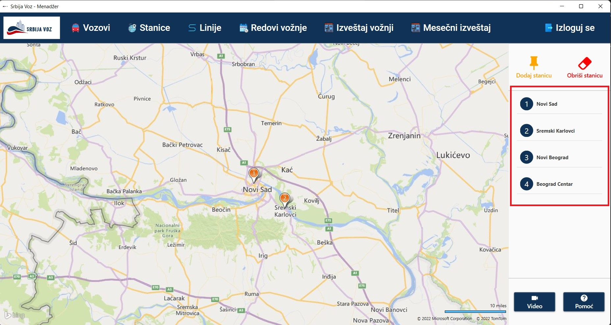
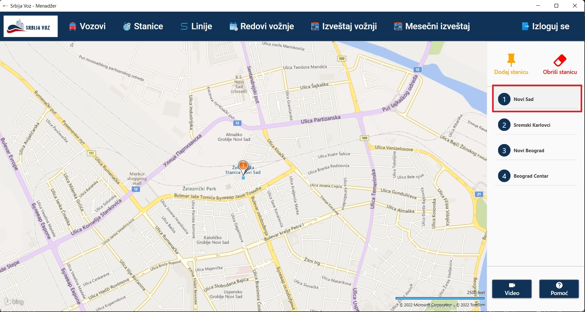
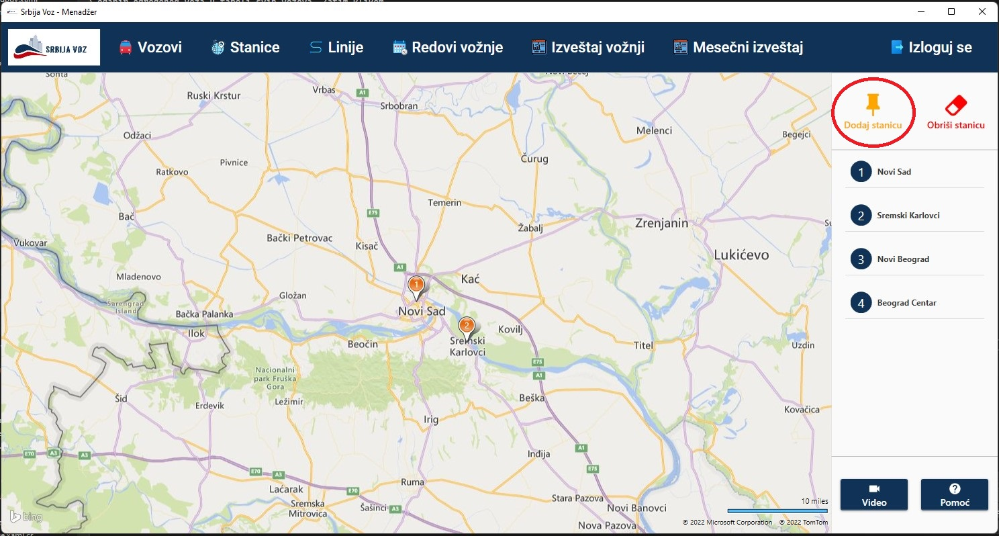
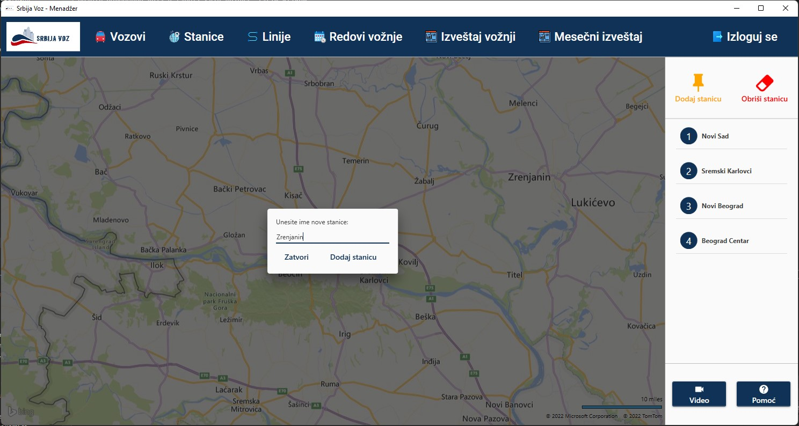
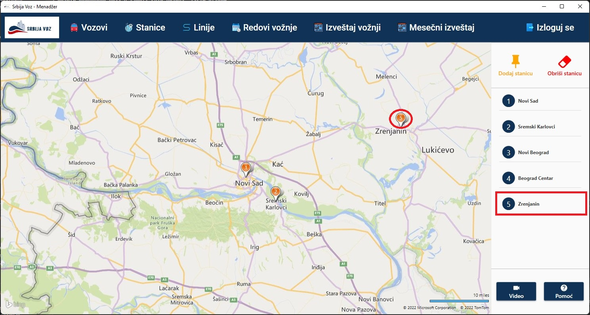
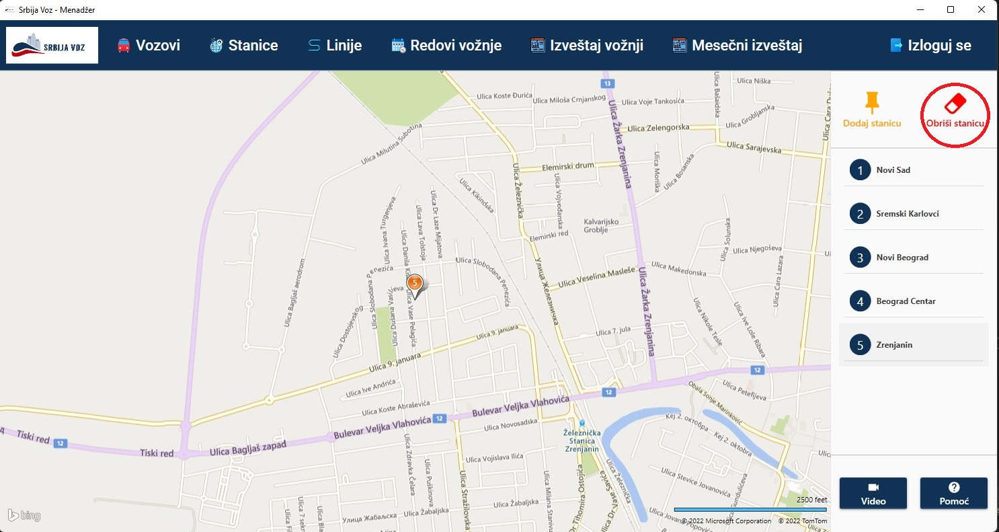
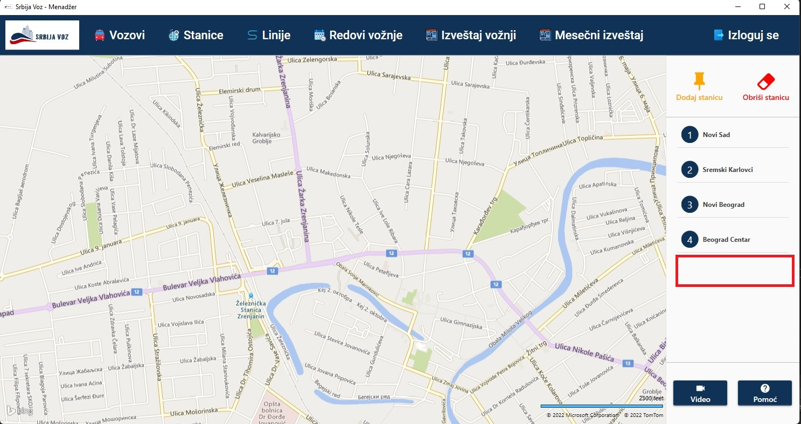

U desnom delu prozora, na slici ispod, izlistane su sve postojeće stanice.

Zumiranje odredjene stanice na mapi je moguće dvoklikom levog tastera miša na željenu stanicu u listi stanica. Dvoklikom na stanicu "Novi Sad", ta stanica je zumirana na mapi, kao što možemo videti na slici ispod.
Prvi korak jeste klik levim tasterom miša na zaokruženu ikonicu sa slike ispod i prevlačenje te ikonice na lokaciju nove stanice na mapi.
Nakon izbora lokacije na mapi (kada je otpušten levi taster miša), pojavljuje se iskačući prozor gde je potrebno uneti ime nove stanice.
Pritiskom na dugme "Dodaj stanicu", napraviće se nova stanica na mapi i biće dodata u listu svih stanica.
Prvi korak jeste zumiranje stanice za brisanje, kako bi se mogla precizno izabrati tačna lokacija na mapi. Nakon toga, potrebno je kliknuti levim tasterom miša na zaokruženu ikonicu sa slike ispod. Taster miša treba držati pritisnutim sve dok se zaokružena ikonica ne prevuče do stanice za brisanje.
Kada se taster miša otpusti, stanica će biti obrisana, ukoliko je lokacija dovoljno precizno označena. U ovom slučaju je to stanica "Zrenjanin". Stanica je obrisana i sa mape i iz liste svih stanica.
